The feel
In the Backrooms the horror is the place itself, not a monster or a ghost.1 It is an apparently endless warren of yellowed office rooms that you fall into by noclipping out of reality,2 and because rooms like these normally hold furniture, equipment and people, their emptiness already feels wrong.3 Chiwetel Ejiofor, who stars in the 2026 film, says that "by the very nature of their extreme ordinariness, it becomes quite disturbing".1
The Backrooms grew out of the airy, nostalgic liminal-space images shared online, but they are about the fear of being lost and forgotten.4 The director Kane Parsons links them to a half-remembered late 1990s and early 2000s, seen in family photos where "the flash is always on, the lighting is gross looking, there's yellow walls, the white balance is all off".5 They also explain very little: the internet researcher Tama Leaver says memes like this "work best because they don't explain themselves", which leaves everyone room to fill in what is not shown.5
- mono-yellow
- damp
- buzzing
- windowless
- endless
- lost
Where it comes from
In May 2019 an anonymous user on 4chan's /x/ paranormal board asked for "disquieting images that just feel 'off'", and the replies included a photo of a bleak office with dingy yellow walls and a post that named it the Backrooms, a place you reach if you "noclip out of reality in the wrong areas".5,3 Fans then built shared lore of numbered levels, entities and survival rules,2 and on 7 January 2022 Kane Parsons, then 16, posted his first Backrooms video, made in a month with Blender and After Effects.3,5 The YouTube series led to his A24 feature, Backrooms, released on 29 May 2026.2 In 2024 four sleuths on Discord traced the photo to a 2003 renovation page from a HobbyTown store in Oshkosh, Wisconsin,6 which describes the building as "a former furniture store with plenty of partitions and fake inner walls".7
Core elements
Mono-yellow
The original post called it "the madness of mono-yellow".3 The source photo is white-balance shifted and "not literally that yellow",8 yet its warm green-yellow is what the 2026 film set out to capture,9 spending a month and 50 camera tests getting the wallpaper's sickly yellow right.1
Yellow wallpaper and damp carpet
The post promised "the stink of old moist carpet".3 The photo shows mismatched yellow wallpaper over cheap brown carpet,10 and the real room, with no windows, had water damage bad enough that all of it had to come out.6,7
Drop ceilings and fluorescent lights
Overhead are dropped ceilings, foam panels in aluminium grids and flickering fluorescent tubes, which the architecture critic Edwin Heathcote calls "a Tron grid of dusty panels".11 The lights are never quiet: the first post heard "the endless background noise of fluorescent lights at maximum hum-buzz".3
Irregular maze layout
The first post describes "approximately six hundred million square miles of randomly segmented empty rooms".3 In the photo the walls are wallpapered, not painted, the doorways have no doors and are too wide, some walls stop short of the ceiling and the lights are spaced incorrectly.3 A study of built places found that deviations from familiar layouts are what make a space feel uncanny.12
Entry by noclipping
You arrive by accidentally noclipping out of reality, a term borrowed from video games,4 and once inside you are cut off from the world and entirely alone.10
Crowdsourced lore and found footage
The lore is crowdsourced: levels with their own environments, monsters and survival ratings,10 collected in an exhaustive wiki.4 Parsons' YouTube series turned it into VHS found footage, with every handheld camera move keyframed in Blender.8
How to do it
Study the source photo
Study the source photo: 640 by 480 pixels, with no windows in sight.6 It is white-balance shifted, so the room was never literally that yellow.8 A shift also moves skin tones, so with people in shot the film made the wallpaper a little more yellow instead.8
Build the rooms procedurally
Block out the whole space digitally before anything else, as Parsons did for the film before production began.2 The rooms can be built procedurally with no modelling or UV unwrapping: the walls come from maths, the paths from textures and the cutouts from cubes, and about 90% of the work takes six nodes.13 Randomise the wall cutouts and the light panels.13
Test the yellow under real lights
Judge the yellow under your real lighting, because it looks different on a computer screen.1 The film's production designer, Danny Vermette, tested 30 wallpaper and carpet combinations under several lighting setups to get the tone and the pattern scale right, and to stop the patterns striating on camera.14
Light from the ceiling fixtures only
In the film's Backrooms scenes the crew "didn't place a single light": the tubes sit in the ceiling fixtures, and the spacing of the ceiling tiles and lights was worked out in pre-production.8 Let the fluorescents flicker more and more unpredictably as things go wrong, as the film does when the Backrooms start to break in.9
Shoot wide-angle in first person
Parsons' series is framed strictly in first person, and the film sticks to what a character sees, or to the character seeing it.15 Inside the Backrooms it used lenses of 18 mm or wider; in a space that uniform, even a 14 mm looks normal.15
Print the footage to VHS
For its found-footage scenes the film shot a RED Komodo cropped to Super 16 with an 8-64 mm zoom, then printed the footage to VHS, along with shots that were entirely computer-generated.8 Add film grain as the last step, and leave it unbaked if the footage will be edited afterwards.13
Build the sound from the hum
Start from the first post's "endless background noise of fluorescent lights at maximum hum-buzz".3 The film's sound is built from low-frequency hums, fluorescent buzzes and distorted ambient textures.1
Cheat sheet
- Ceiling
- Drop ceiling, foam panels in an aluminium grid11
- Light
- Fluorescent tubes in the ceiling fixtures, nothing else8
- Colour
- Warm green-yellow, from a white-balance shift9
- Lens
- 18 mm or wider, first person15
- Tape
- Super 16 crop, 8-64 mm zoom, printed to VHS8
- Sound
- Low hum, fluorescent buzz, distorted ambience1
Do
- Keep the rooms empty. The photo shows no furniture or people,10 and in one study, people in a distorted public interior made it less uncanny.12
- Make each room slightly wrong: a doorway too wide, a wall that stops short of the ceiling, lights spaced wrongly.3
- Add awkward verticality, such as doorways halfway up a wall, raked floors and gaps to crawl or squeeze through, instead of flat endless rooms.14,1
- Hold the monster back. Kotaku praised Parsons' series for its restraint: after the first video, the monster stays away for several entries.3
- Frame off-centre and let shots tilt. The space is so uniform that the frame still holds together.8
Avoid
- Explaining it. Memes like this "work best because they don't explain themselves".5
- Jump scares. The film's dread comes from repetition, emptiness and disorientation instead.1
- Lenses with character or distortion. On vast, single-tone walls, any lens effect shows up as a gradient or a shift.15
- Going sharp and high-resolution without fixing the basics. Without VHS to hide behind, the wallpaper shade and the light spacing have to be right.8
Tools and tutorials
- How to make the Backrooms in Blender
Blender Guru's procedural workflow, in 80 minutes.13
- How to make a Backrooms film with Blender
A short route from model to tape.
- ntsc-rs
Free analog video effect for the final footage.
- Blender
Free and open source, and what Parsons used.14
Palette
From Kane Parsons' short, Escape the Backrooms, The Complex: Expedition, Inside the Backrooms and the A24 poster. Stay on the yellows, and keep the red for later levels.
Feel the vibe
Listen
From A24's own channel. Put it on while you build a level.
YouTubePlays over the end credits of the 2026 film.16 Worn, glowing and far away.
YouTubeUsed in the 2026 film.16 It sounds like a dance record playing three rooms away.
YouTubeThe menu music from Escape the Backrooms. Notice how little it does.
YouTubeWhat it sounds like when the hum finally stops being the worst thing.
YouTube
More references
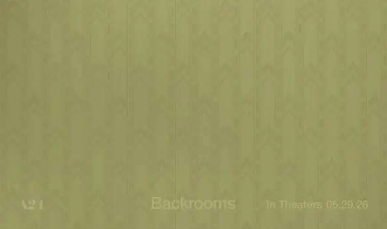
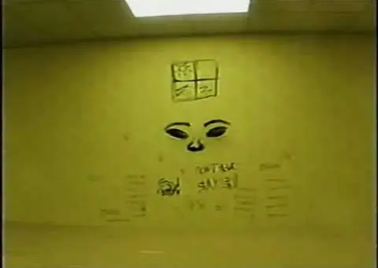
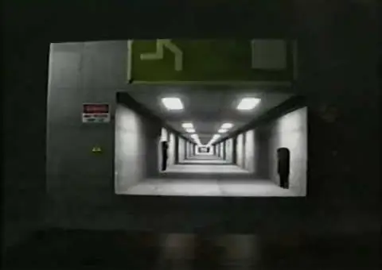
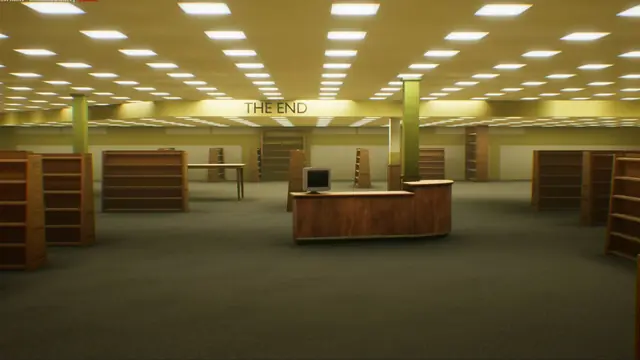
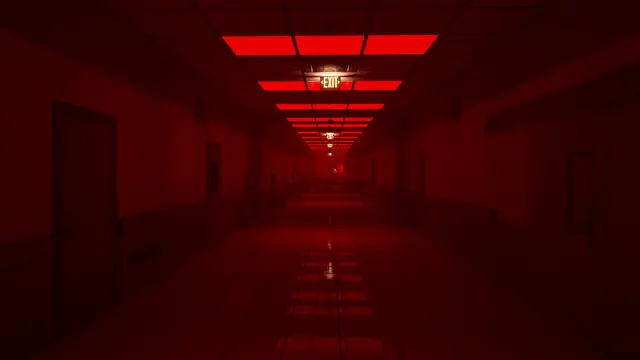
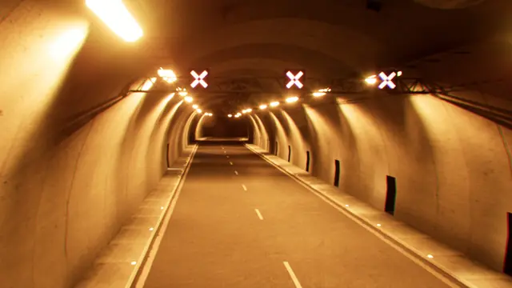
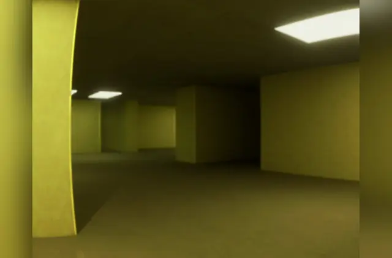
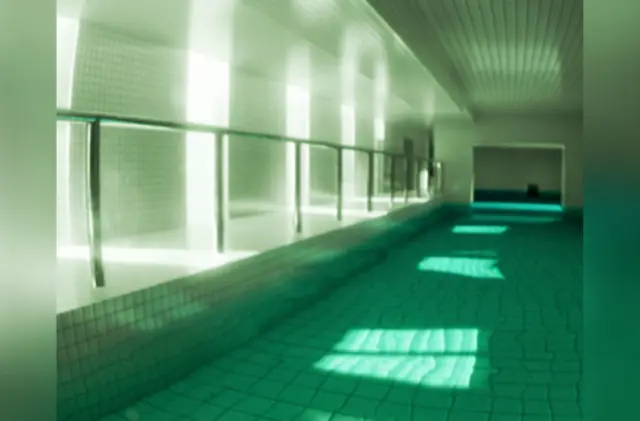
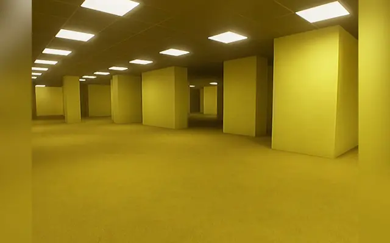
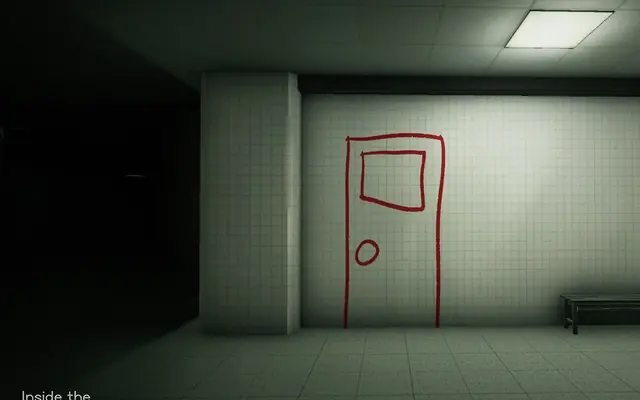
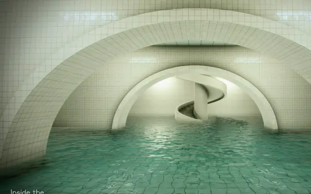
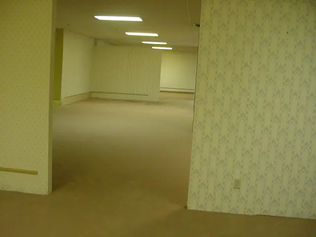
Games
- The Backrooms 1998
Study its VHS look, and what the tape hides and dates.
- Inside the Backrooms
Study how dark it dares to go, and its levels beyond the yellow.
- Escape the Backrooms
Study how each level changes the rules, not only the colours.
- The Complex: Found Footage
Very little happens. Study it as a lesson in restraint.
- The Complex: Expedition
Study its yellow, some of the most convincing in games.
Film, art and more
- The Backrooms (Found Footage)
Kane Parsons, 16 at the time, made it in Blender and After Effects. Start here.5
- The Backrooms
The history, from the first post to the film.
- Backrooms
Parsons' A24 feature, written by Will Soodik.2
- The Backrooms Wiki
The crowdsourced wiki of levels and entities. Read a few pages for the tone of voice.4
- House of Leaves
Mark Z. Danielewski's novel of endlessly unfolding space. A parallel, not a source.11
Sources
- 1‘Backrooms’ and the sinister architecture of liminal spaces: the new movie redefining horror
- 2Kane Parsons went back to the beginning to create the Backrooms’ nightmare world IRL
- 3The 4Chan Creepypasta That’s Taking Over The World (And You May Not Even Realize It)
- 4Noclipping is no joke: the strange world of The Backrooms explained
- 5The Backrooms: How a Creepy Office Photo Became an Internet Bogeyman
- 6The Backrooms, a liminal space so internet-famous it spawned its own canon, has been found in the real world by 4 sleuths on a Discord server
- 7The new “Revolution Raceway”
- 8Check Out Backrooms Cinematographer Jeremy Cox’s Original Look Book
- 9Backrooms, fugitives, and genuine magic
- 10How to 'No-Clip' Reality and Arrive in the Backrooms
- 11“As so often seems to happen, Koolhaas got there first”
- 12Structural deviations drive an uncanny valley of physical places
- 13Making your own Backrooms in Blender is surprisingly easy
- 14Architects will “cringe a bit” at design horrors in Backrooms says production designer
- 15DP Jeremy Cox and VENICE 2 Ground the Extra-Dimensional Reality of “Backrooms”
- 16Soundtracks of Cinema: ‘Backrooms’